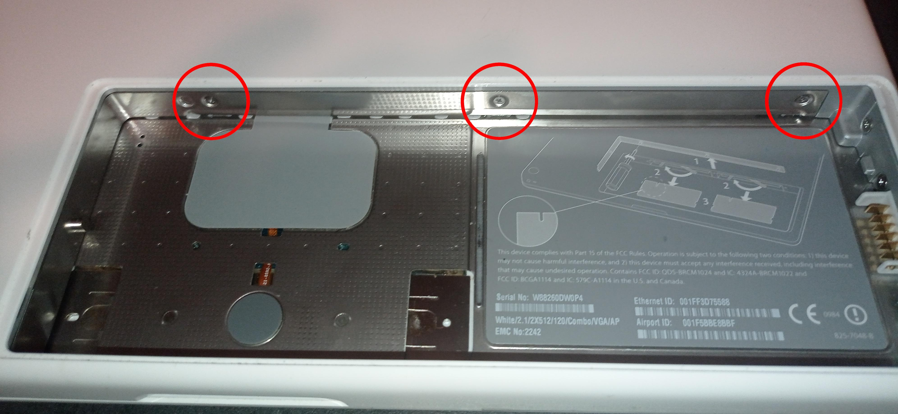

BytesOfProgress
Restoring a 2006 MacBook
12th July 2024 / 10:00 AM
I recently purchased a white 2006 MacBook (A1181) at a very low price. I bought it without knowing if it even works at all, since the seller did not have the power adapter. But given the cost, it was a great deal even if it was just the case with nothing inside. I could always rebuild it from the ground up.
After ordering the power adapter: It works! It starts up and boots into OSX. The person who created the user on the OSX installation was not the seller. That means I had to bypass the password login, just to see what hardware is actually in there, because there have been a few different hardware configurations.
I managed to do this using the first method of this tutorial on youtube.
Essentially I had to boot to a shell by pressing "Command"+"S" right after pressing the power button. There I entered the following commands: This is the hardware configuration of mine:
# mount -uw /
# launchctl load /System/Library/LaunchDaemons/com.apple.DirectoryServices.plist
# ls /Users
# dscl . -passwd /Users/username password
# rebootThis is the hardware configuration of mine:
What I did now was upgrading the MacBook with an SSD:
I did this by removing the battery first, and then removing 3 screws:

After removing these 3 screws, I was able to remove the cover of the RAM and HDD:
I pulled out the HDD by the white paper sticking on the bracket. Then I screwed in the new SSD and closed the MacBook again.
Then I had to figure out installing a supported version of OSX / MacOS on the SSD. This did require some research, seems like it is not easy to get your hands on a working OSX installation. After 2 days of research someone linked me a (totally legit installation) working raw hard disk image of their Mac OS X Snow Leopard (10.6) installation. I just had to flash it with Balena Etcher and boot the MacBook from the USB using the "Option" / "Alt" key right after pressing the power button and then select the right media in the boot menu:
I then was greeted by the OSX installer:
The installer did not immediatly recognize the newly built-in SSD, but that was just a little filesystem issue: I just had to go to "Utilities ----> Disk Utility" and reformat, or erase, the SSD to a filesystem which is supported by Mac:
After that, the SSD was recognized just fine by the installer:
The installer worked without any issues, until a reboot which is performed by the installer automatically: It rebooted and then guided me through the first time setup wizard of OSX. One issue I had, was that the installer got stuck while creating the local user account. That was easily solved by not establishing an internet connection during the setup process.
The installation and setup succeeded!
back